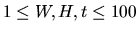
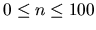
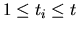
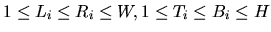
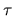

| Robbery |
Inspector Robstop is very angry. Last night, a bank has been robbed and the robber has not been caught. And this happened already for the third time this year, even though he did everything in his power to stop the robber: as quickly as possible, all roads leading out of the city were blocked, making it impossible for the robber to escape. Then, the inspector asked all the people in the city to watch out for the robber, but the only messages he got were of the form ``We don't see him."
But this time, he has had enough! Inspector Robstop decides to analyze how the robber could have escaped. To do that, he asks you to write a program which takes all the information the inspector could get about the robber in order to find out where the robber has been at which time.
Coincidentally, the city in which the bank was robbed has a rectangular shape. The roads leaving the city are blocked for a certain period of time t, and during that time, several observations of the form ``The robber isn't in the rectangle Ri at time ti'' are reported. Assuming that the robber can move at most one unit per time step, your program must try to find the exact position of the robber at each time step.
The input file contains the description of several robberies. The first line of each description consists of three numbers W, H, t ( ) where W is the width, H the height of the city and t is the time during which the city is locked.
The next contains a single integer n ( ), the number of messages the inspector received. The next n lines (one for each of the messages) consist of five integers ti, Li, Ti, Ri, Bi each. The integer ti is the time at which the observation has been made ( ), and Li, Ti, Ri, Bi are the left, top, right and bottom respectively of the (rectangular) area which has been observed. ( ; the point (1, 1) is the upper left hand corner, and (W,H) is the lower right hand corner of the city.) The messages mean that the robber was not in the given rectangle at time ti.
The input is terminated by a test case starting with W = H = t = 0. This case should not be processed.
For each robbery, first output the line ``Robbery #k:'', where k is the number of the robbery. Then, there are three possibilities:
If it is impossible that the robber is still in the city considering the messages, output the line ``The robber has escaped.''
In all other cases, assume that the robber really is in the city. Output one line of the form ``Time step : The robber has been at x,y." for each time step, in which the exact location can be deduced. (x and y are the column resp. row of the robber in time step .) Output these lines ordered by time .
If nothing can be deduced, output the line ``Nothing known." and hope that the inspector will not get even more angry.
Output a blank line after each processed case.
4 4 5 4 1 1 1 4 3 1 1 1 3 4 4 1 1 3 4 4 4 2 4 4 10 10 3 1 2 1 1 10 10 0 0 0
Robbery #1: Time step 1: The robber has been at 4,4. Time step 2: The robber has been at 4,3. Time step 3: The robber has been at 4,2. Time step 4: The robber has been at 4,1. Robbery #2: The robber has escaped.